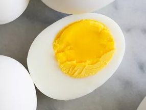

Hard Boiled Eggs

Description
Instructions to hard boil an egg
Ingredients
Steps
- Add uncooked eggs to saucepan
- Submerge eggs under water
- Bring eggs and water to boil over stovetop
- Boil for 10-12 minutes
- Remove eggs, submerge in cold water
- Once the eggs have cooled, peel
Back to home page